README에서 설치할 도구 확인하기
수업 시스템의 저장소를 엽니다. 저장소는 프로젝트의 파일과 그 파일이 바뀐 기록을 모아 둔 곳입니다. 아래로 내리면 나오는 설명 글이 README이고, 그 안의 실행 환경 표에 설치할 도구 여섯 개의 기준 버전과 설치 링크가 있습니다.

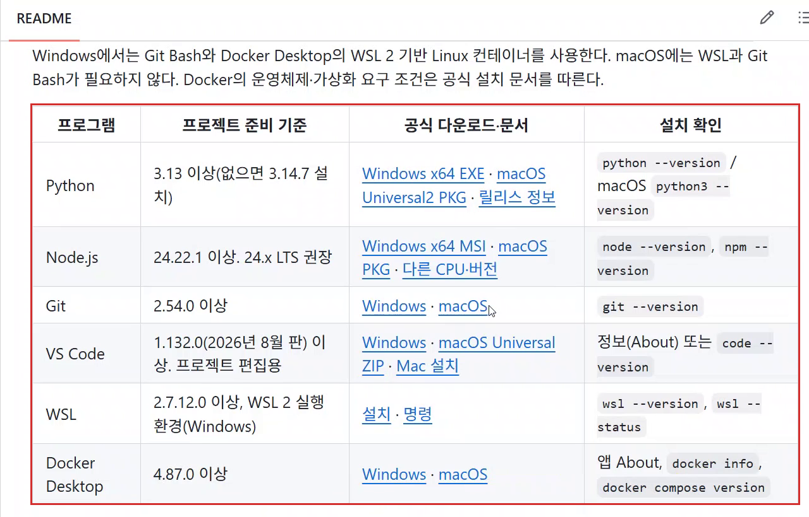
| 도구 | 여기서 어디에 쓰나 |
|---|---|
| Python | 프로그래밍 언어입니다. 시스템을 켤 때와 나중에 코드를 만들 때 씁니다. |
| Node.js | 프로그램을 돌려 주는 도구입니다. 시스템이 켜질 때 씁니다. |
| Git | 파일이 바뀐 기록을 남기는 도구입니다. 저장소를 내 컴퓨터로 받을 때 씁니다. |
| VS Code | 코드를 쓰고 고치는 프로그램입니다. 명령도 여기서 칩니다. |
| WSL | Docker가 돌아가는 데 필요한 바탕입니다. 설치만 해 두면 됩니다. |
| Docker Desktop | 수업 시스템의 프로그램 여러 개를 한 번에 켜 줍니다. |
이미 설치한 도구는 버전이 README 표의 기준 이상이면 그대로 쓰고, 없거나 낮은 것만 설치합니다. Mac은 같은 README의 macOS 안내를 따릅니다.
Python 설치하고 실행 확인하기
README의 Python 링크에서 Windows 설치 파일을 받아 엽니다. Add python.exe to PATH를 체크하고 Install Now를 누르세요. PATH는 컴퓨터가 프로그램을 찾을 때 보는 폴더 목록이라, 체크해 두어야 python 명령을 찾습니다.

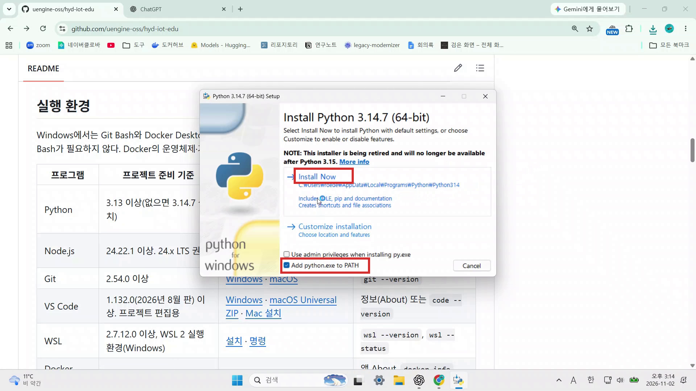
설치가 끝나면 설치 창을 닫고, 시작에서 PowerShell을 검색해 Windows PowerShell을 새로 엽니다. PowerShell은 글자로 명령을 치는 창(터미널)입니다. 설치 전에 열어 둔 창은 방금 설치한 프로그램을 찾지 못합니다.

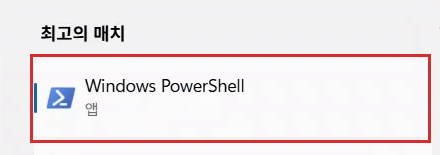
아래 명령을 실행합니다. 명령은 손으로 치면 틀리기 쉬우니 복사해 붙여넣으세요.
python --version

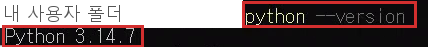
README 표의 기준 이상인 버전이 나오면 됩니다.
Node.js 설치하고 실행 확인하기
README의 Node.js 링크에서 Windows 설치 파일을 받아 엽니다. Next로 넘기다가 Tools for Native Modules 화면에서는 체크하지 않고 Next, 다음 화면에서 Install을 누르세요. Windows가 설치해도 되는지 물으면 예를 누릅니다. 뒤의 설치에서도 같습니다.

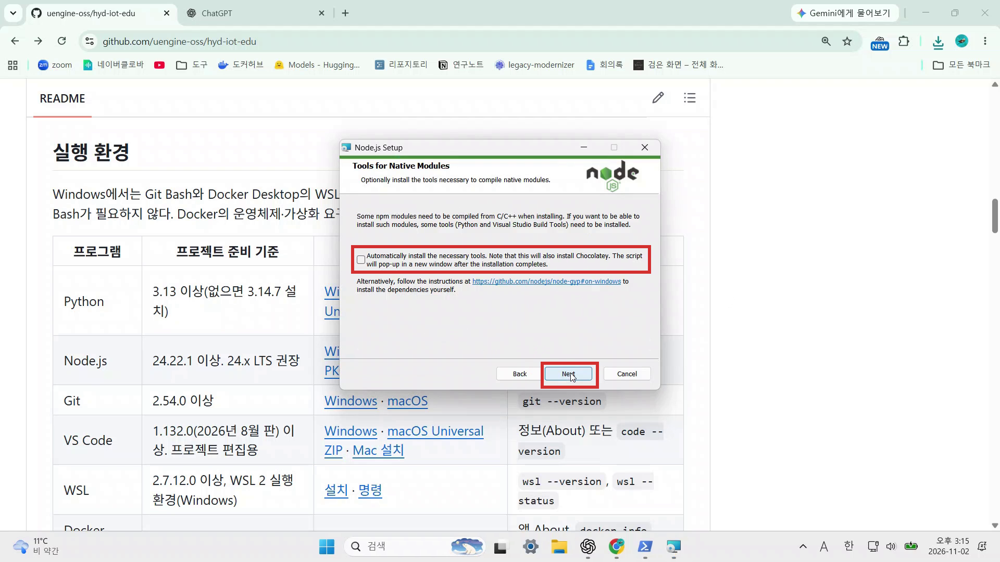
PowerShell을 새로 열고 실행합니다.
node --version

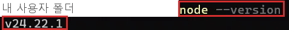
README 표의 기준 이상인 버전이 나오면 됩니다.
Git 설치하고 Git Bash 열기
README의 Git 링크에서 Windows 설치 파일을 받아 엽니다. 선택 화면이 여러 번 나오는데 바꾸지 않고 Next만 누릅니다. PATH 화면도 처음부터 골라진 권장(Recommended) 그대로 둡니다.

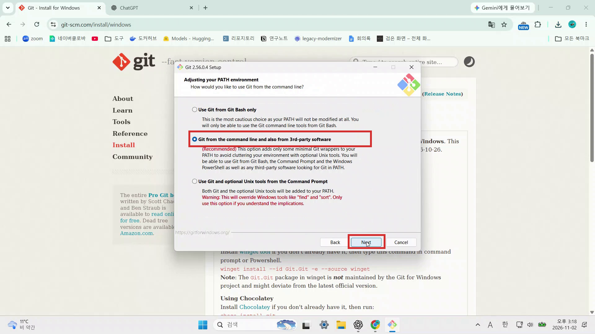
마지막 창에서 Launch Git Bash를 체크하고 View Release Notes는 체크를 푼 뒤 Finish를 누르세요.

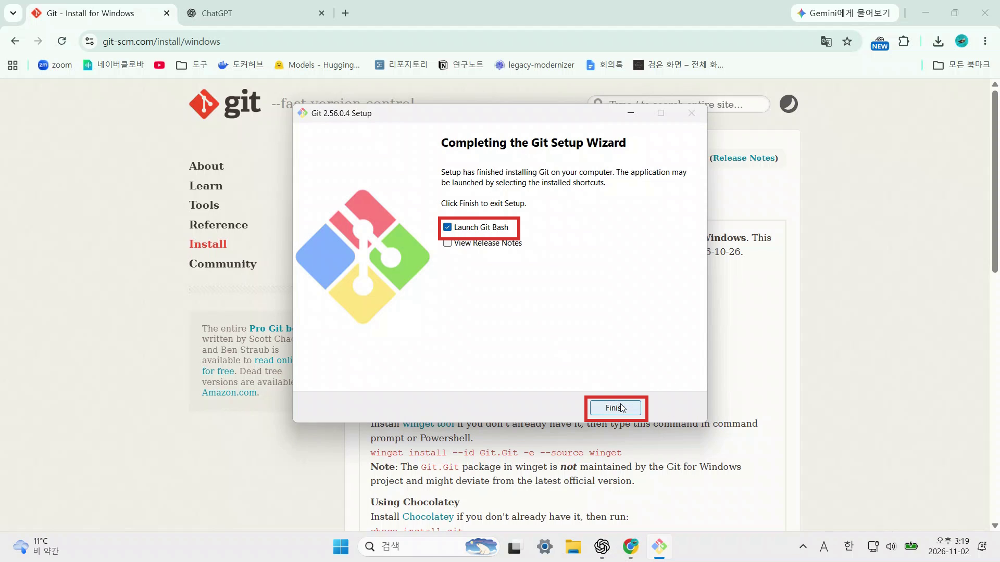
Git Bash가 열립니다. Git과 함께 설치되는 터미널이고, README의 명령은 Git Bash용으로 적혀 있어서 앞으로 README 명령은 여기서 칩니다. 열린 Git Bash에서 실행합니다.
git --version

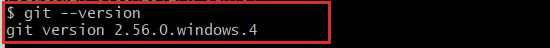
Git 버전이 나오면 됩니다.
VS Code 설치하기
README의 VS Code 링크에서 Windows User Installer를 받아 엽니다. 추가 작업 화면에서 바탕 화면에 바로 가기 만들기를 체크하고, PATH에 추가는 체크된 그대로 둔 채 설치합니다. 마지막 창에서 Visual Studio Code 실행 체크를 끄고 종료를 누르세요. VS Code는 Docker까지 설치한 뒤에 엽니다.

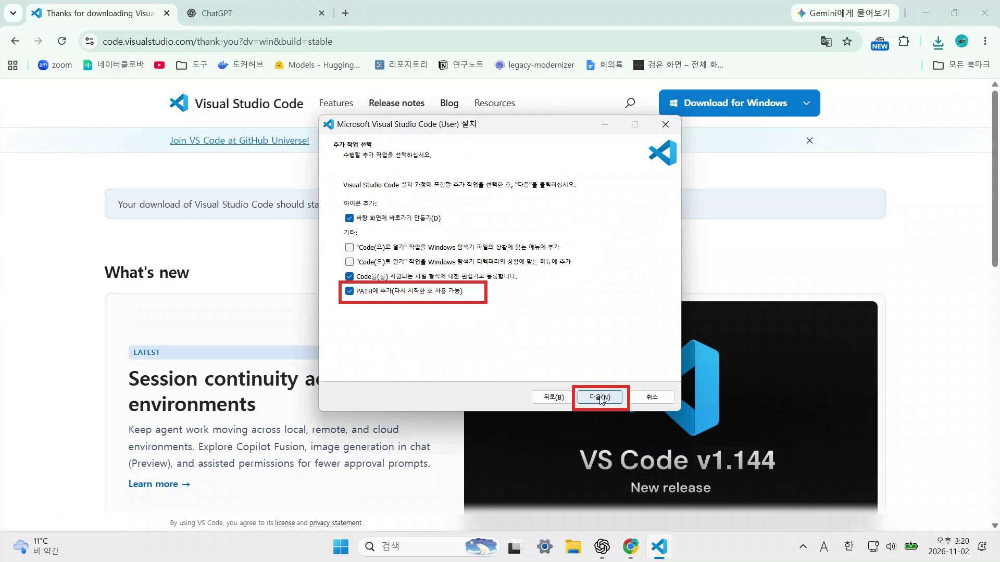
WSL 준비하기
Mac은 이 단계를 건너뜁니다. README의 WSL 설치 링크로 열리는 Microsoft 페이지의 명령은 필요 없는 것까지 설치하므로 쓰지 않습니다.
시작 메뉴에서 PowerShell을 찾아 마우스 오른쪽 버튼 → 관리자 권한으로 실행을 누르고, 허락을 묻는 창에서 예를 누릅니다. 열린 창에서 실행합니다.
wsl --version
나온 화면에 따라 아래 가운데 하나만 합니다.
| 나온 화면 | 할 일 |
|---|---|
| 아무 키나 누르라는 안내 | 60초 안에 Enter를 누르고, 설치가 끝나 버전이 나올 때까지 기다립니다. |
| 버전이 바로 나옴 | 이미 설치돼 있습니다. README 표의 기준 이상이면 다음 단계로 갑니다. |
| WSL이 없다는 오류만 나옴 | 아래 「WSL이 없을 때」 명령을 실행합니다. |
| 버전이 README 표의 기준보다 낮음 | 아래 「버전이 낮을 때」 명령을 실행합니다. |

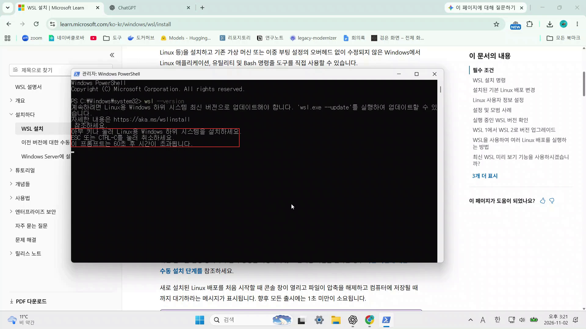

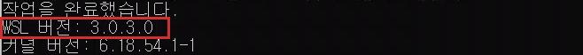
WSL이 없을 때
wsl --install --no-distribution --web-download
버전이 낮을 때
wsl --update --web-download
재부팅하라고 나오면 재부팅한 뒤 wsl --version을 다시 실행해 버전이 README 표의 기준 이상인지 봅니다.
Docker Desktop 설치하기
README의 Docker Desktop 링크로 열린 페이지에서 맨 위 Docker Desktop for Windows 버튼으로 설치 파일을 받아 엽니다(그 아래 Microsoft Store 버튼이 아닙니다). 설정 창에서 WSL 2 선택을 그대로 두고 OK를 누르세요.

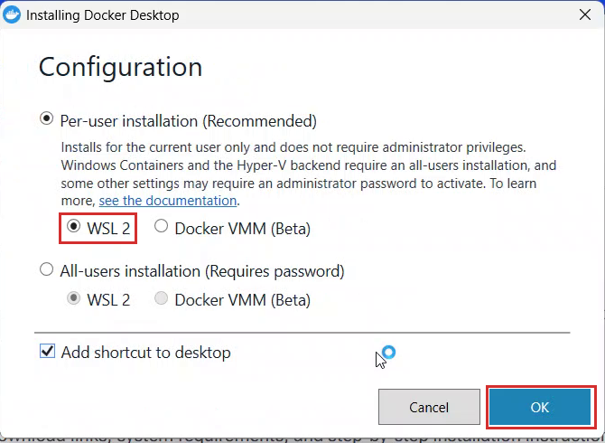
Installation succeeded가 나오면 Close를 누릅니다.

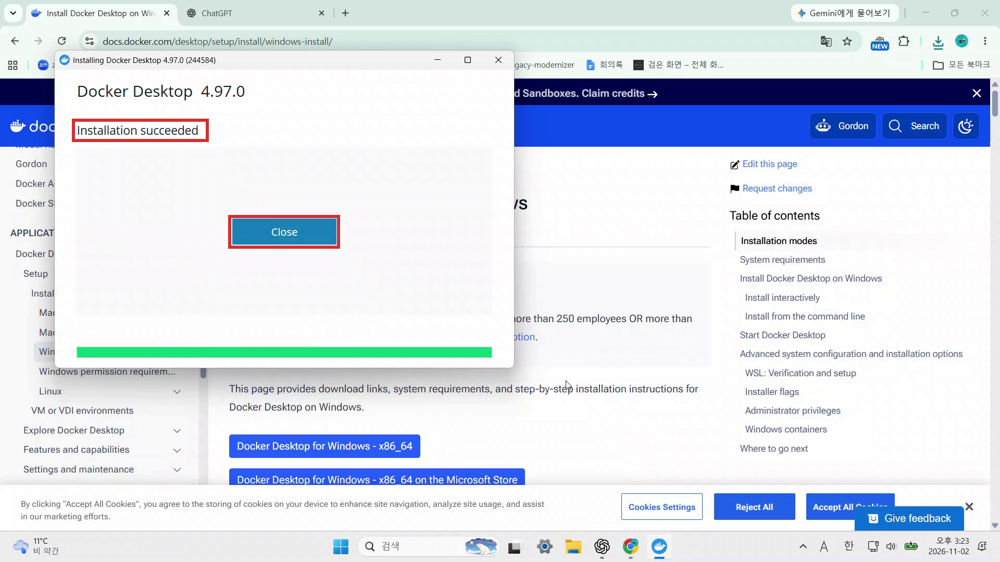
VS Code에 한국어 팩과 Codex 설치하기
바탕 화면의 Visual Studio Code 아이콘을 더블클릭해 VS Code를 엽니다. 로그인 창에서 Continue without Signing In을 누르세요.

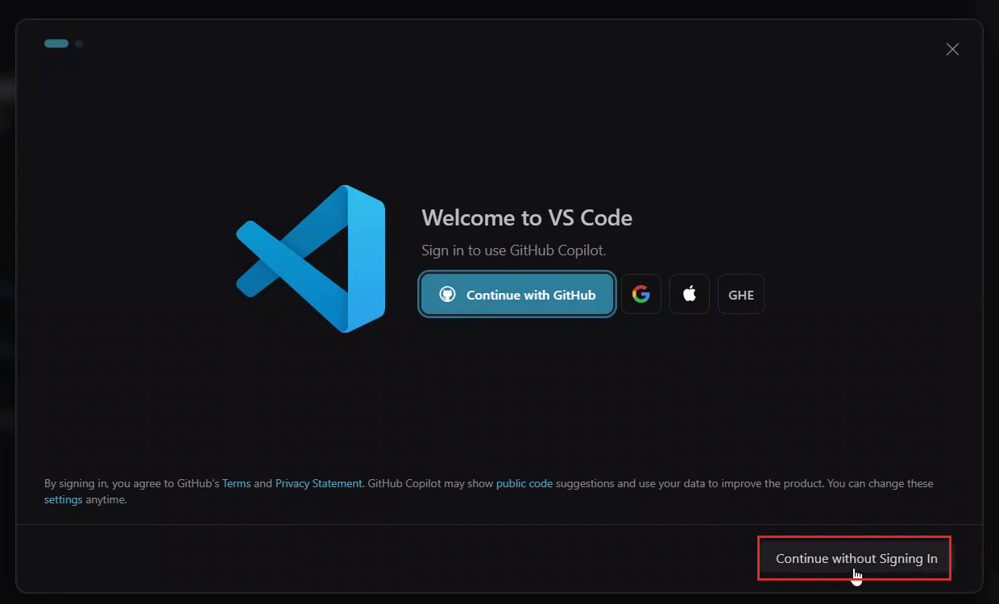
테마 창에서 Get Started를 누릅니다.

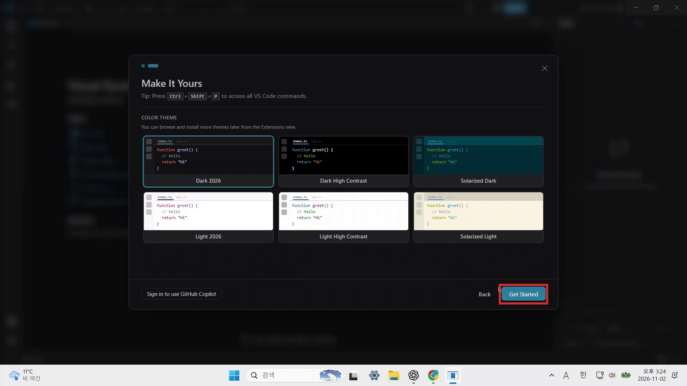
왼쪽 확장 아이콘(Extensions)을 누릅니다. 확장은 VS Code에 기능을 더해 주는 추가 프로그램입니다. 검색 칸에 korean을 치고 Korean Language Pack for Visual Studio Code 가운데 게시자가 Microsoft인 것을 설치하세요.

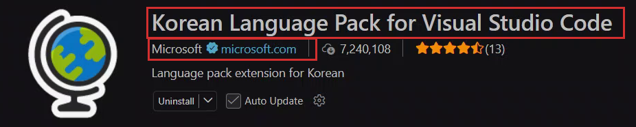
같은 검색 칸에서 Codex를 찾아 게시자가 OpenAI인 것을 설치합니다. Codex는 VS Code 안에서 대화하며 코드를 함께 만드는 AI입니다. 설치되면 오른쪽 패널에 Codex 탭이 생깁니다.

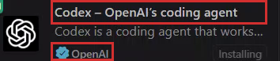
오른쪽 아래 알림의 Change Language and Restart를 누르고, 다시 시작을 묻는 창에서 Restart를 누르세요.

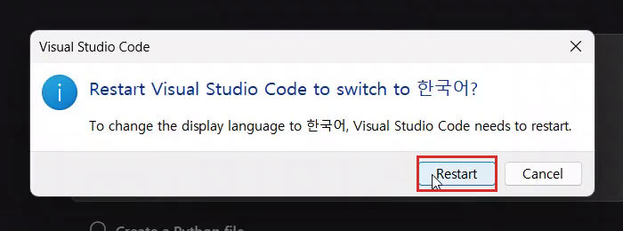
메뉴가 파일, 터미널처럼 한국어로 보이면 됩니다.
알림이 사라진 경우에는 Ctrl + Shift + P를 누르고, 열린 칸에서 Configure Display Language를 찾아 한국어를 고릅니다.
폴더를 열고 저장소 받기
VS Code는 폴더 하나를 열어 두고 그 안에서 일합니다. 파일 → 폴더 열기를 누릅니다.

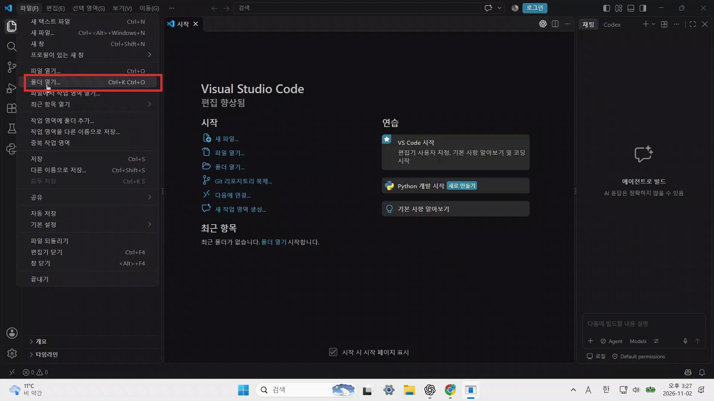
저장소를 받을 폴더를 고르고 폴더 선택을 누르세요. 위치는 어디든 괜찮고, 위쪽 새 폴더로 새로 만들어도 됩니다. 사진은 C 드라이브에 만든 study 폴더입니다.

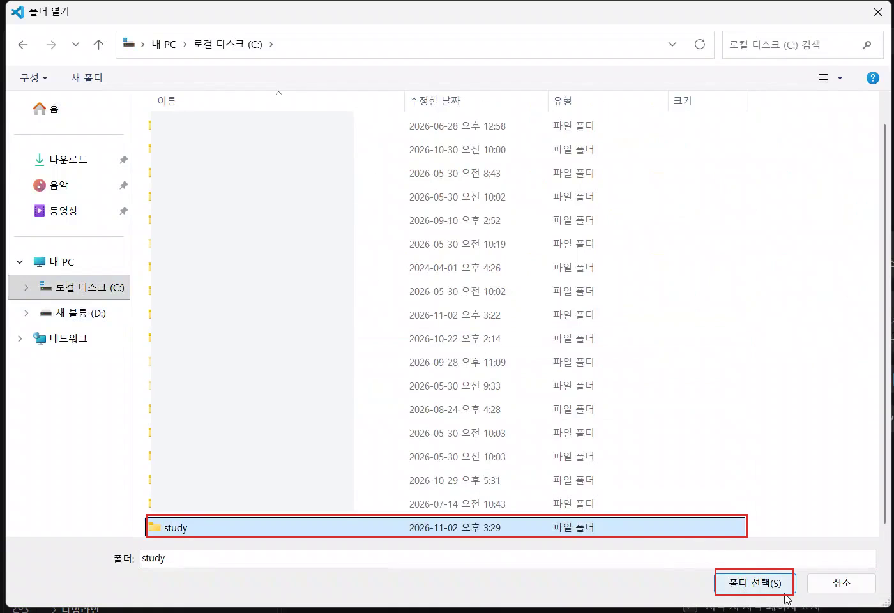
폴더를 신뢰할지 묻는 창이 나오면 Yes, I trust the authors를 누릅니다. 창이 안 나오면 다음으로 갑니다.

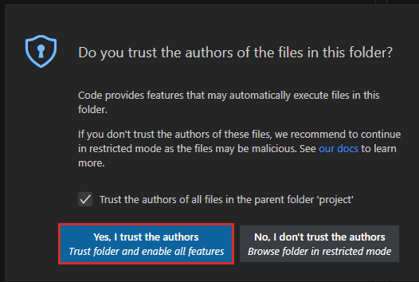
왼쪽 아래에 Restricted Mode가 보이는 경우에만 아래 두 사진대로 합니다. 제한 모드라 AI가 동작하지 않으므로, Restricted Mode를 누르고 Workspace Trust 화면에서 Trust를 누르세요.

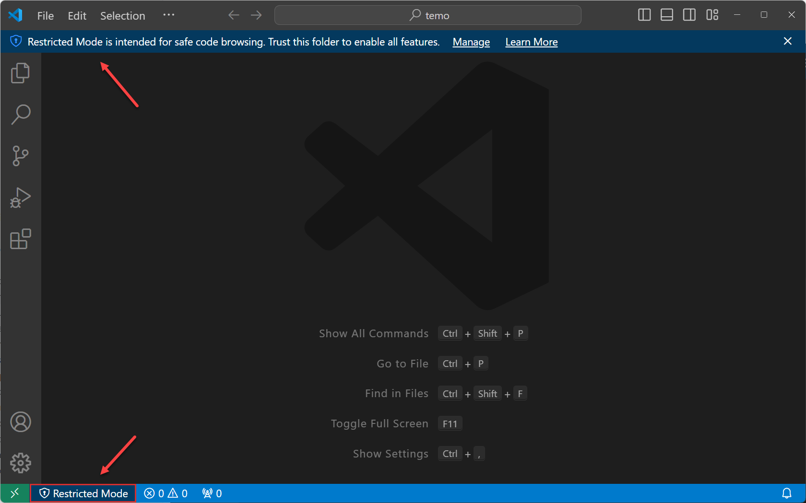

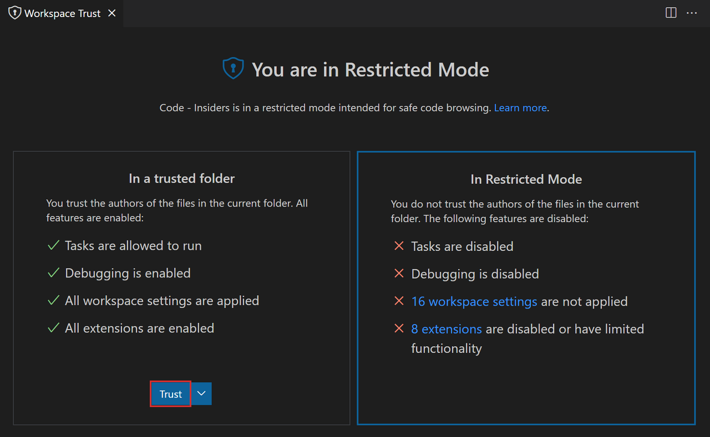
터미널 → 새 터미널을 누릅니다. 메뉴가 접혀 있으면 위쪽 … 안에 있습니다.

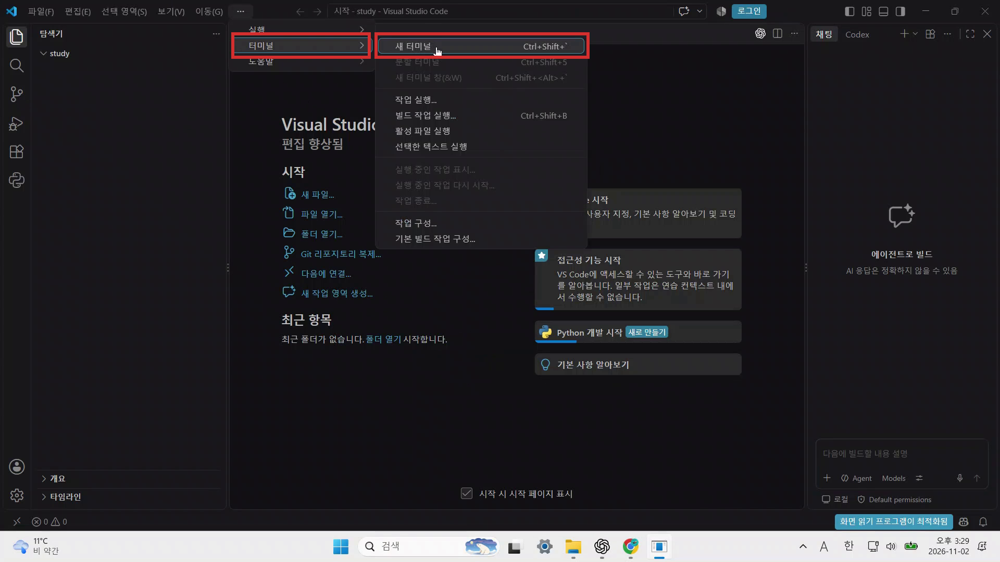
터미널 위쪽 새 터미널 옆 화살표 → Git Bash를 고릅니다.

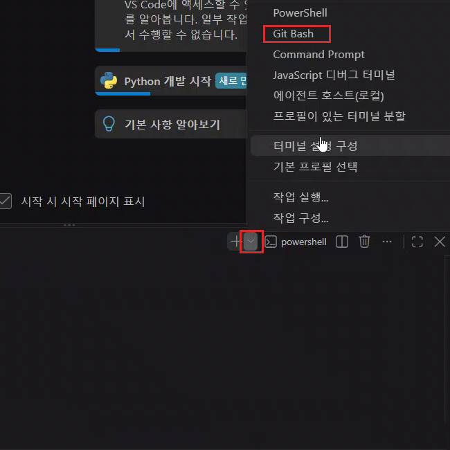
Git Bash에 아래 명령을 넣고 Enter를 누르세요. 저장소를 내 컴퓨터로 받아 오는 명령입니다.
git clone --depth 1 https://github.com/uengine-oss/hyd-iot-edu.git

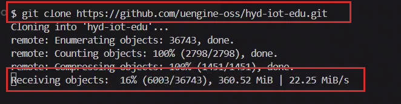
Receiving objects 비율이 올라가면 받는 중입니다. 위 명령은 지금 파일만 받아서(--depth 1) 사진보다 훨씬 빨리 끝납니다.
학교 인터넷에서 schannel: server closed abruptly로 끊기는 경우에는 아래 명령을 한 번 실행하고 git clone 명령을 다시 실행하세요. 그래도 끊기면 휴대폰 핫스팟으로 받습니다.
git config --global http.sslBackend openssl
Codex에 로그인하고 받은 저장소 확인하기
오른쪽 Codex 탭을 열고 다음을 누릅니다.

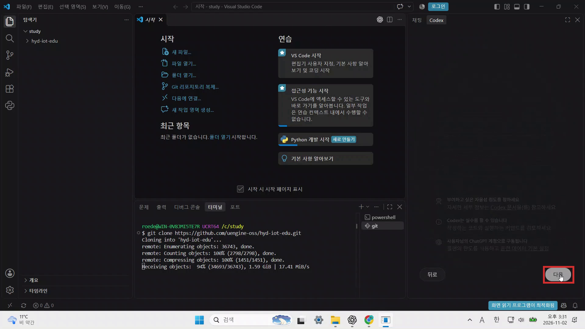
현재 모델로 계속 진행을 누르세요.

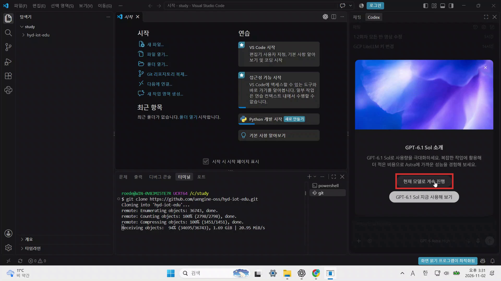
ChatGPT로 로그인을 누르면 브라우저가 열립니다. 본인 계정을 누르세요(처음이면 계정 정보를 넣는 화면이 먼저 나옵니다).

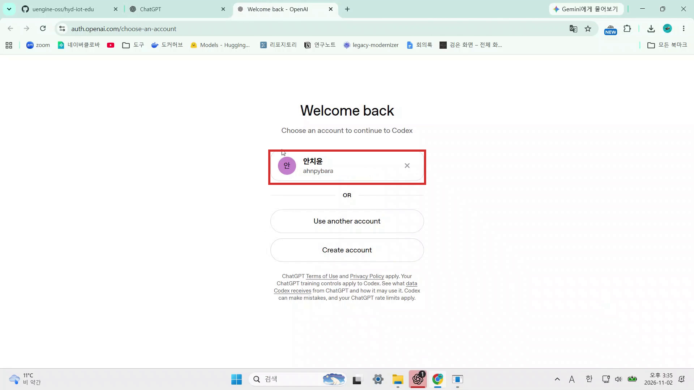
Select a workspace에서 Continue를 누릅니다.

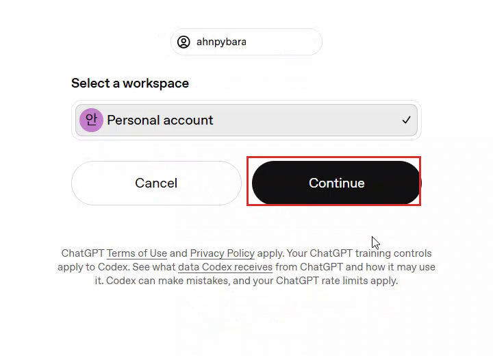
전화번호 확인이 나오면 휴대폰으로 인증을 마칩니다. Signed in to Codex가 나오면 VS Code로 돌아갑니다.

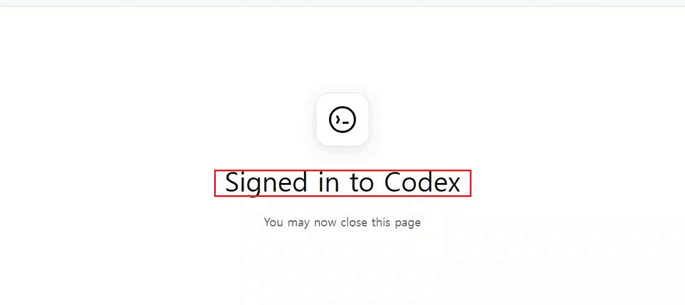
Codex 입력칸에 인사를 넣고 보내세요.
안녕
Codex 패널에 답이 나오고, 왼쪽 탐색기에 hyd-iot-edu 폴더가, 아래 터미널에 Receiving objects: 100%와 Resolving deltas: 100%가 보이면 됩니다.

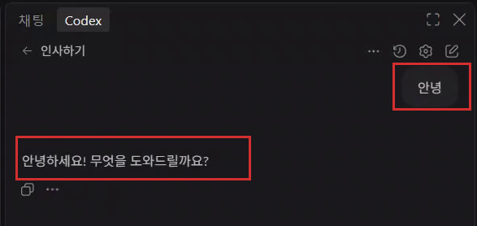
명령 한 번으로 시스템 시작하기
Docker가 켜져 있어야 시스템이 켜지므로, 바탕 화면의 Docker Desktop 아이콘을 더블클릭해 먼저 엽니다. 처음 열 때는 창이 뜨는 데 시간이 좀 걸립니다. Docker Subscription Service Agreement가 나오면 읽어 보고 Accept를 누르세요.

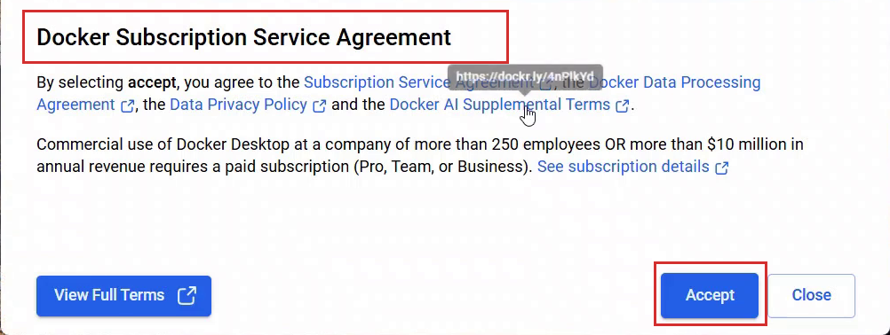
Welcome to Docker에서 오른쪽 위 Skip을 누릅니다.

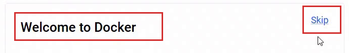
왼쪽 아래에 Engine running이 나오면 Docker가 다 켜진 것입니다. Settings → General의 Choose Virtual Machine Manager (VMM)가 WSL 2인지도 봅니다.

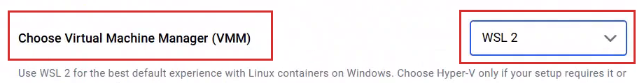
VS Code의 Git Bash로 돌아와, 받은 hyd-iot-edu 폴더로 들어갑니다.
cd hyd-iot-edu
입력 줄 위치가 hyd-iot-edu로 바뀌면 시스템을 켜는 명령을 실행하세요.
bash scripts/start_all.sh

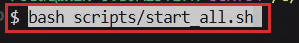
줄 앞의 1/8, 2/8 같은 숫자가 지금 몇 번째 단계인지 알려 줍니다. 처음에는 4/8 단계에서 10분 넘게 걸릴 수 있습니다. Pulling의 받은 양이 변하고 있으면 잘 되고 있는 것이니, 같은 명령을 다시 치지 말고 기다리세요.

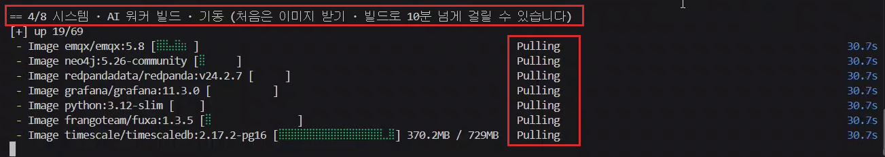
완료. 포털 줄이 나오면 그 줄의 주소를 Ctrl을 누른 채 클릭하세요.

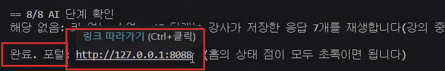
브라우저에 HYD 포털의 홈이 열리면 이번 실습은 끝입니다.
- 3/8 단계의 빨간
WARN: config section [inbucket] is deprecated줄은 오류가 아닙니다. - 완료 대신 포털은 열 수 있습니다 줄이 나온 경우에는 AI 단계만 켜지지 않은 것입니다. 그 위 실패 줄부터 끝까지 복사해 Codex에게 보내고 무엇을 고칠지 물어보세요.
- 다음에 켤 때는 Docker Desktop을 먼저 열고,
hyd-iot-edu폴더에서bash scripts/start_all.sh만 다시 실행합니다. 끄는 법은 README의 실행 파일에 있습니다.